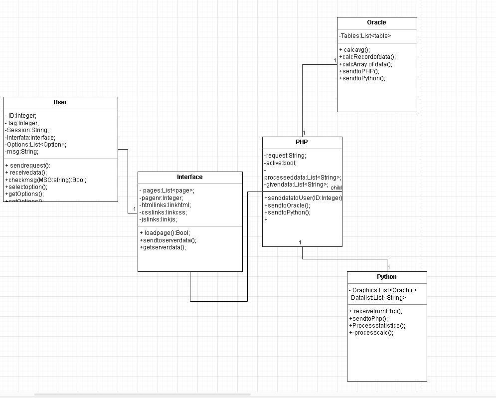

Scopul este de a crea o aplicatie ce ofera utilizatorilor un tool de vizualizare multi-criteriala a datelor despre diverse spatii auto de parcare. Aplicatia va oferi totodata si suport pentru procesare statistica a datelor la nivel de back-end si le va transmite utilizatorilor in functie de preferintele acestora.
In cadrul acestui document am utilizat tagul h3 pentru titlurile capitolelor,h4 pentru titlurile subcapitolelor,p pentru paragrafele text si hr pentru delimitari.
Aceasta aplicatie se adreseaza pesoanelor care doresc sa obtina informatii si date procesate statistic despre parcuri auto.
Aplicatia dezolvata are rolul de a oferi informatii generoase despre parcurile auto din Romania si date statistice care pot ajuta utilizatorii sa-si formeze o imagine asupra anumitor astfel de parcuri care le-ar putea crea conditii favorabile.
Produsul reprezinta un proiect realizat de doi studenti de la Facultatea de Informatica din cadrul UAIC.
Produsul ofera reprezentari grafice si rezultate procesate statistic despre date stocate in baza de date a aplicatiei despre parcurile auto din Romania, informatii despre realizarea aplicatiei,date de contact catre administratorii aplicatiei,si date despre aplicatia in sine.
Majoritatea utilizatorilor care utilizeaza aplicatia sunt in principal cei care au permis de conducere, manageri de parcuri auto sau arhitecti.
Aplicatia prezinta o arhitectura eterogena din punctul de vedere al SO-ului utilizat de utilizatori.
Aplicatia se bazeaza pe gestionare unei baza de date despre parcurile auto. Acest lucru inseamna ca un nivel crescut de informatii va spori considerabil "delay-ul" informatiilor ce trebuie obtinute de la serverul aplicatiei.
Aplicatia pune la dispozitie o pagina dedicata problemelor legate de difunctionalitati ale aplicatie vizavi de utilizatorii sai, pe care acestia o pot folosi pentru a contacta administratorii aplicatiei pentru problemele pe care le confrunta.
Aplicatia s-ar putea sa nu sincronizeze la timpul dorit cererile numeroase ale clientilor pentru a le putea oferi datele dorite. Astfel legaturile dintre serverul de baze de date,PHP, si Python trebuie sa fie pe deplin constiente de acest lucru.
Aplicatia s-ar putea sa nu sincronizeze la timpul dorit cererile numeroase ale clientilor pentru a le putea oferi datele dorite. Astfel legaturile dintre serverul de baze de date,PHP, si Python trebuie sa fie pe deplin constiente de acest lucru.
Aplicatia ofera o pagina de start cu un buton care trimite utilizatorul la pagina principala a aplicatiei. Bara de navigare este plasata in partea stanga pentru fiecare pagina a aplicatiei. Fiecare pagina Web este accesibila din aceasta.Si in fiecare pagina Web se or gasi informatiile dorite.
Utilizator va putea utiliza periferice(ex. mouse-ul) pentru a folosi aplicatia.Aplicatia accepta dispozitive eterogene pentru a o folosi.
Utilizatorul va putea vizualiza datele primite de la server codificare prin Unicode(UTF-8) folosind HTML,CSS si Javascript pentru formatare, stilizare si functionalitati oferite la nivel de fron-end, datele urmeaza a fi receptionate la nivel de server intr-un script .php pentru a fi analizate cererile acestuia. Ulterior se va face o cerere la baza de date conectata(Oracle), unde vor fi procesate anumite informatii si transmise catre .php, care,dupa caz, le va trimite catre un script .py unde se va realiza procesarea statistica a datelor si le va transmite inapoi si dupa direct la utilizator.
Aplicatia utilizeaza protocolul UTF-8 sau UTF-16 pentru codificarea Unicode, TCP/IP protocol pentru protocolul de internet la nivel de browser, si pentru transmiterea informatiilor la nivel de server intre script-uri.
Aplicatia utilizeaza protocolul UTF-8 sau UTF-16 pentru codificarea Unicode, TCP/IP protocol pentru protocolul de internet la nivel de browser, si pentru transmiterea informatiilor la nivel de server intre script-uri.
Aplicatia este organizata in documente .html,.css,.js pentru partea de front-end si .php,.py,.sql pentru partea de back-end.
Aplicatia utilizeaza in acest sens un script in Python care va procesa statistic datele primite de la baza de date a acesteia, folosind functiile predefinite oferite de acest mediu.
Aplicatia utilizeaza in acest sens un script in Php care analizeaza cererile transmise de utilizatori sub forma de stringuri si le pharse-aza pentru a analiza cererile mai departe.
Aplicatia utilizeaza modelul de arbore la nivelul de scripturi HTML cu functionalizati oferite de .css si .js la nivel de font-end. La nivel de back-end utilizam procesarea anumitor informatii la nivel de baza de date spre a eficientiza analiza informatiilor si a scade nivelul de delay. Pentru procesarea statistica am ales Python fiindca compilatorul acestuia se dovedeste a fi cel mai rapid in acest sens.
Aplicatia utilizeaza client-server bazat pe protocolul TCP/IP care asigura integritatea datelor procesate si ce trebuie transmise.
Aplicatia utilizeaza la nivel de securitate a transmiterii datelor criptarea RSA.
Aplicatia poate poate fi utilizata pe orice platforma utilizatorii doresc sa o foloseasca.
Aplicatia ofera servicii Web si functionalitati la nivel de .php,.py si .sql.
Aplicatia ar putea avea un server proxy aditional care sa legalizeze la nivel international anumite cereri primite de la utilizatori. Deasemenea ar putea sa asigure o criptare Stream cu generatori pseudo-randomi pe chei de 2^96 biti.
Aplicatia nu are astfel de termeni necunoscuti.
